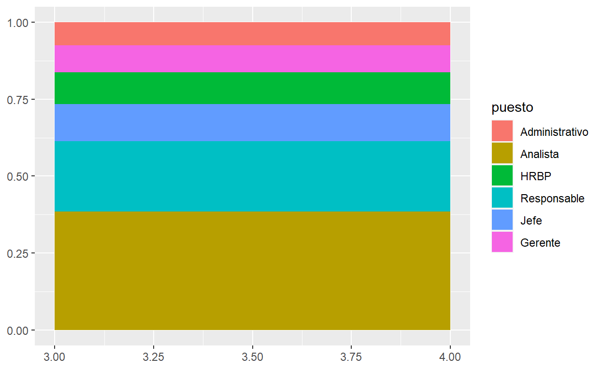
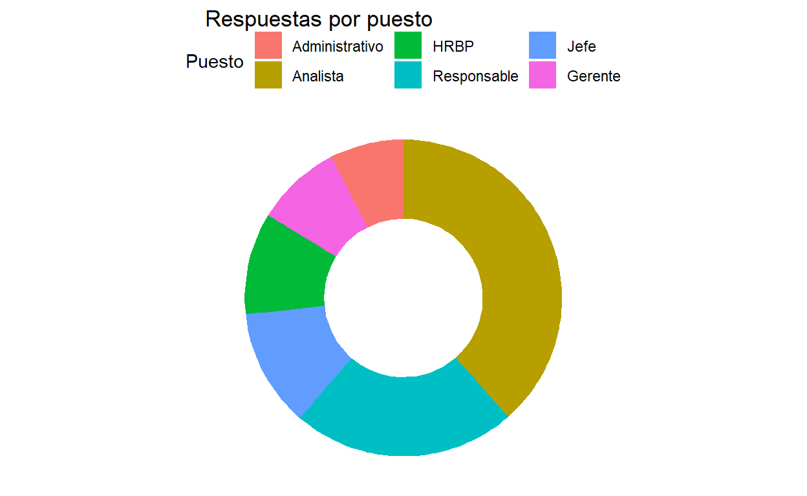
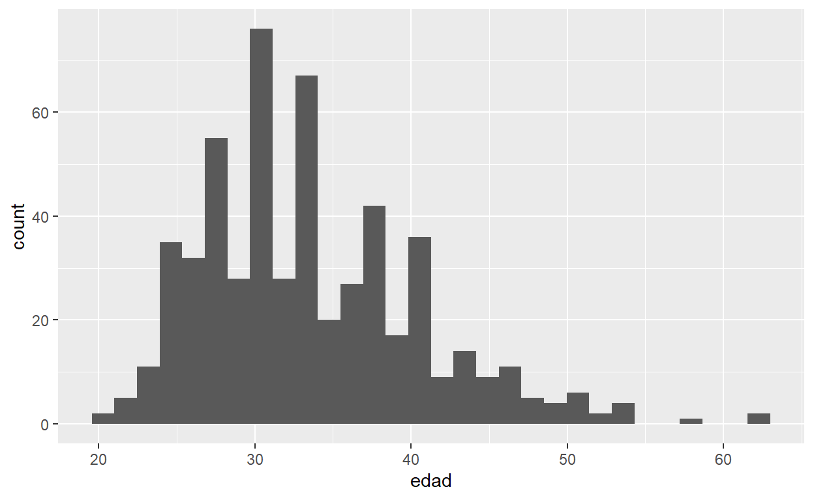

Pensamiento Estadístico en People Analytics
Este es un tutorial interactivo que diseñamos para simplificar la práctica y afirmar los conocimientos vistos en las clases de PEPA (Pensamiento Estadístico en People Analytics) y pensado para simplificar lo más posible los ejercicios sin que requiera tanto de vos escribiendo código.
Los scripts que usaremos en este documento los podés copiar y pegar para reutilizarlos en tu propia PC. Recordá que tenés estos recursos a disposición:
- Mapa conceptual de R y RStudio con sus respectivos videos explicativos.
- Tutorial interactivo de Introducción a R
- Todo el material del Club de R para RRHH en Google Drive. Cada carpeta de cada mes, tiene un link a su respectivo video en Youtube. Y acá hay contenido introductorio, hasta cosas más complejas como análisis predictivos, text mining o análisis de clusters por ejemplo.
¿Cómo usar este tutorial?
Este tutorial va a tener distintas secciones, en las cuales vas a poder correr los resultados directamente aprentando el ícono que dice “Run Code”.
Por ejemplo, probá sumar 2 + 2 y hacer click en “Run Code”.
El código también corre con las teclas Ctrl+Enter.
En cada ejercicio vas a poder encontrar pistas en la tecla “Hint”. Calculá tu edad en el siguiente script:
# Poné el año en el que naciste
anio_nacimiento <- ____
anio_actual <- 2021
# Calculá tu edad
edad <- _______ - ________
# Visualizá los resultados
edad# Reemplazá las líneas ____ por el año en el que naciste
# Para calcular tu edad restá el año actual menos tu año de nacimiento# Poné el año en el que naciste
anio_nacimiento <- 1979
anio_actual <- 2021
# Calculá tu edad
edad <- anio_actual - anio_nacimiento
# Visualizá los resultados
edadPara este tutorial vamos a utilizar el dataset de la Encuesta KIWI de Sueldos LATAM 🥝 que están almacenados en un objeto .RDS que es una extensión propia de R para almacenar datos y que mantiene las características de los datos. También hay una versión .csv en el repositorio de esta clase.
# Cargamos los datos
kiwi_ar <- readRDS("kiwi_ar.RDS")Explorando los datos
Corré la siguiente línea de código y respondé la pregunta a continuación
# Ver la estructura del data frame
str(kiwi_ar)Análisis Univariado
Con el análisis univariado lo que hacemos es analizar una variable a la vez. Dependiendo si la variable es categórica o numérica vamos a poder realizar distintas cálculos y análisis.
Trabajando con variables categóricas
Con las variables categóricas, ya sean nominales u ordinales, no podemos hacer calculos aritméticos como sumas, promedios y cosas por el estilo. ¿Qué podemos hacer? Por ejemplo contar casos.
library(tidyverse) # Limpieza y manipulación de datos
kiwi_ar %>%
count(puesto) # Cuenta la cantidad de casos por puestoContar casos de una variable, como en el ejemplo anterior que contamos la cantidad de respuestas recibidas para cada puesto, en estadística se llama Distribución de Frecuencias. ¿Por qué?

En realidad, debe haber un por qué, pero podremos sobrevivir sin saberlo.
En ocasiones, algo que permite hacer más claras las interpretaciones de los resultados es agregar los porcentajes.
# Tidyverse ya está cargado
library(scales) # Es para usar la función percent() a continuación
# Hace click en "Run Code"
kiwi_ar %>%
count(puesto) %>%
mutate(porcentaje = percent(n / sum(n))) # Toma el valor de la celda en n y lo divide por el total de la columna nAl incorporar el porcentaje en el análisis lo que estamos haciendo es agregar, lo que en estadística se llama Frecuencias Relativas.
En el data frame tenemos entonces tres posiciones, Administrativo, Analista, y HRBP que no son posiciones jerárquicas. ¿Qué porcentaje del total representan?
Dados que los datos están ordenados por jerarquía (¿cómo se llaman estas variables?) podemos sumar el porcentaje de Administrativo al porcentaje de Analista, y ese total, sumarlo a HRBP. Usemos la función freq() del paquete summarytools para hacerlo fácilmente.
kiwi_ar %>%
select(puesto) %>%
freq(report.nas = FALSE)Si vamos sumando los porcentajes de cada fila, acumulándolos (agregando primero Administrativo y Analista y siguiendo después con HRBP y así sucesivamente) lo que estamos haciendo es una Distribución de Frecuencias Relativas Acumuladas.
Entonces, ¿qué porcentaje de las respuestas pertenecen a personas en puestos no jerárquicos?
Repaso
Distribución de frecuencias: Que es el conteo, en este caso, de la cantidad de respuestas recibidas por puesto.
Frecuencias relativas: Que es el porcentaje que representa el conteo sobre el total.
Frecuencia relativas acumuladas: Que representa el porcentaje acumulado de los ingresos de cada trimestre.
Práctica 1
¿Se puede tomar mate en todas las empresas? Veamos la cantidad de respuestas de la variable mate para ver en cuántos casos respondieron que sí se podía tomar, y cuántos respondieron que no. Reemplazá los espacios vacíos según corresponda al nombre de la función o de la variable.
kiwi_ar %>%
count(_____)# Reemplazá el espacio vacío dentro de la función count() con el nombre de la variable 'mate'kiwi_ar %>%
count(mate)
¿Y qué porcentaje representan de las respuestas? Agrega una columna calculando el porcentaje (frecuencia relativa).
kiwi_ar %>%
______(____) %>% # Completá con la función y la variable que corresponde
mutate(porcentaje = round(n/sum(n),2)) # Agrega una columna con los porcentajes redondeando a 2 decimales.# Usá la función count() para contar la cantidad de respuestas por cada caso
# La variable que queremos analizar se llama 'mate'kiwi_ar %>%
count(mate) %>% # Completá con la función y la variable que corresponde
mutate(porcentaje = round(n/sum(n),2)) # Agrega una columna con los porcentajes redondeando a 2 decimales.Calcular la distribución de frecuencias acumuladas según la region. Reemplazá los espacios vacíos según corresponda al nombre de la función o de la variable.
kiwi_ar %>%
select(______) %>%
freq(report.nas = FALSE)# Reemplazá el espacio vacío dentro de la función select() con el nombre de la variable 'region'kiwi_ar %>%
select(region) %>%
freq(report.nas = FALSE)Análisis Univariado Variables Categóricas - Visualización
Para visualizar una sola variable categórica, las opciones principales son los gráficos de barras y los gráficos de torta o de dona, con sus respectivas ventajas y desventajas.
Gráficos de barras
Para hacer un gráfico de barras podemos utilizar una función la función de R base plot() indicando la variable que queremos visualizar (indicando primero el nombre del data frame después del signo $ el nombre de la variable).
# Realizar un gráfico de barra
plot(kiwi_ar$puesto)Si usamos la misma función con una variable numérica vamos a obtener un gráfico diferente.
# Realizar un gráfico de cantidad de personas a cargo
plot(kiwi_ar$sueldo_bruto)En este caso lo que hace R es asignarle un número de índice (el número de la fila) y es lo que grafica en el eje x mientras que en el eje y asigna el valor de sueldo_bruto.
Volvamos a los gráficos de barras.
Uno de los paquetes más utilizados para hacer visualizaciones es el paquete ggplot2 que ya viene incorporado dentro de la suite tidyverse, o sea que no hace falta instalarlo aparte si ya instalamos previamente tidyverse. Hay muchos paquetes más para hacer visualizaciones, la ventaja de ggplot2 es que hay muchos desarrollos y extensiones diseñadas para funcionar con sus funciones, lo cual lo hace un gran punto de partida.
Primero tenemos que “activar” el paquete con la función library().
# Cargar el paquete con la función library()
_______(ggplot2)
# Realizar el gráfico de barras
ggplot(kiwi_ar, # Primero indicamos el nombre del dataframe
aes(x = puesto)) + # Dentro de aes() mapeamos la variable que queremos graficar
geom_bar() # Indico el tipo de gráfico# Cargar el paquete con la función library()
library(ggplot2)
# Realizar el gráfico de barras
ggplot(kiwi_ar, # Primero indicamos el nombre del dataframe
aes(x = puesto)) + # Dentro de aes() mapeamos la variable que queremos graficar
geom_bar() # Indico el tipo de gráficogeom_bar() requiere que le indiquemos una sola variable. Lo que hace es contar la cantidad de veces (la frecuencia) con la que aparece cada caso, y en función de la cantidad de veces que aparece cada puesto en el dataset, va aumentando el tamaño de la barra. Para más información sobre los distintos geoms consultar la documentación del sitio de ggplot2 o bien la guía que confeccionamos.
Gráficos de torta o de dona
Para bien o para mal, los gráficos de torta no tienen un geom específico, y si bien en R base hay una función específica para hacerlos, requiere un poco de preprocesamiento previo.
En esencia los pasos para hacer un buen gráfico de torta son los siguientes:
Preparar los datos para que las categorías queden ordenadas de mayor a menor según su frecuencia.
Hacer un gráfico apilado al 100%
“Doblar” el gráfico hasta que quede como un gráfico de torta o dona.
Este sería un gráfico apilado al 100%

Y ahora lo tenemos que “doblar”.
 )
)
Los pasos para hacer un gráfico de dona son los siguientes. Podés copiar el script en tu máquina para probar el paso a paso.
# Preparación de los datos
puestos <- kiwi_ar %>%
select(puesto) %>% # Seleccionamos la columna tipo universidad
group_by(puesto) %>% # Agrupamos los resultados
summarise (n = n()) %>% # Contamos la cantidad de casos para cada grupo
mutate(freq = n/sum(n)) %>% # Creamos una columna nueva calculando la frecuencia relativa
arrange(-n) # Ordenamos los resultados de mayor a menor
# Calcular los porcentajes acumulados (tope de cada rectángulo)
puestos$ymax <- cumsum(puestos$freq)
# Calcula el límite inferior
puestos$ymin <- c(0, head(puestos$ymax, n=-1))
# Hacemos el gráfico
ggplot(puestos, aes(ymax=ymax, ymin=ymin, xmax=4, xmin=3, fill=puesto)) +
geom_rect() +
coord_polar(theta="y") + # Elimina esta línea de código para entender lo que hace R.
xlim(c(2, 4)) + # Prueben eliminando esta línea de código para hacer un gráfico de torta
theme_void() + # Cambia estética del gráfico
theme(legend.position = "top", # Cambia la posición de la leyenda
plot.title.position = "plot") + # Cambia la posición del título
labs(title = "Respuestas por puesto",
fill = "Puesto")

Trabajando con variables cuantitativas
Con las variables numéricas, por otro lado podemos hacer análisis mucho más diversos que con las variables categóricas. Podemos hacer desde cálculos aritméticos (sumas, restas, multiplicaciones y divisiones) hasta cálculos de resumen estadístico (promedio, mediana, desvío estándar, etc.).
Dado que las variables cuantitativas pueden a veces tomar valores infinitos, hacer un cálculo de frecuencias por los valores que tenemos puede ser difícil de interpretar.
Veamos este ejemplo donde tomamos la variable ajuste_porcentaje que indica el valor porcentual de aumentos salariales recibidos durante 2020 (el relevamiento de datos se hizo en octubre).
# Análisis cuantitativo no agrupado
kiwi_ar %>%
count(ajuste_porcentaje)Terminamos con una tabla con 68 filas que tiene niveles de detalles poco útiles (una respuesta detallando que el ajuste fue de 12.69%, dos personos recibieron 12.8% de aumento por ejemplo). Esto es lo que ocurre cuando tenemos datos cuantitativos no agrupados.
En cambio, si armamos categorías, con rangos de aumentos, podemos terminar con algo mucho más informativo, y útil para analizar. A esto le llamaremos análisis de datos cuantitativos agrupados.
kiwi_ar %>%
select(rangos_aumentos) %>%
freq(report.nas = FALSE)Análisis Univariado Variables Cuantitativas - Visualización
Antes de meternos con las medidas de resumen estadístico, y aprovechando este último concepto de datos cuantitativos agrupados, vamos a plantear algunas posibles visualizaciones.
Primero, realicemos un gráfico de barras sobre la variable ajuste_porcentaje.
ggplot(kiwi_ar, aes(x = ajuste_porcentaje)) +
geom_bar()Hay tantos valores posibles que muchas barras pasan desapercibidas. Probemos graficar los rangos de aumentos.
ggplot(kiwi_ar, aes(x = rangos_aumentos)) +
geom_bar()Esta forma de graficar una variable cuantitativa en categorías nos sirve para introducir un tipo de gráfico muy utilizado en Analytics, que es el histograma.
A primera vista, el histograma parece un gráfico de barras, con la diferencia que la barra no representa un valor único (por ejemplo 5), sino un rango de valores. (por ejemplo, entre 5 y 10). Ergo, el alto de la barra va a estar dado por la cantidad de casos que caigan dentro de cada rango.

Ay el arquitecto de Matrix diciendo ergo
De nuevo, hay varias formas de hacer un histograma en R. En R base la forma es la siguiente:
hist(kiwi_ar$ajuste_porcentaje)Y en ggplot2 la forma de hacerlo es la siguiente:
ggplot(kiwi_ar, aes(x = ajuste_porcentaje)) +
geom_histogram(bins = 15) # Ajusta la cantidad de barras que van a aparecer en el gráficoPrueben distintas versiones del histograma cambiando la cantidad de bins o incluso borrando todo lo que está dentro del paréntesis de geom_histogram().
Podemos agregar una capa adicional de información a la visualización con un gráfico adicional conocido como polígono de frecuencia. Una clave para que este gráfico funcione bien en conjunto con el histograma es que ambos tengan el mismo valor en bins.
ggplot(kiwi_ar, aes(x = ajuste_porcentaje)) +
geom_histogram(bins = 15) +
geom_freqpoly(aes(ajuste_porcentaje), # Añadimos el polígono de frecuencia
bins = 15)Esta capa extra nos ayuda a identificar de manera más clara la distribución de los datos. ¿Por qué es importante conocer la distribución de los datos? Porque a veces los datos, los cálculos y las medidas de resumen pueden esconder algunos problemas.

Busquen información sobre el Cuarteto de Anscombe y especialmente del Datasaurus Dozen.
Práctica 2
Realizar un histograma de la variable sueldo_bruto.
ggplot(kiwi_ar, aes(x = _______)) +
geom_histogram()# Colocá el nombre de la variable a graficar (sueldo_bruto)ggplot(kiwi_ar, aes(x = sueldo_bruto)) +
geom_histogram()Aquí nos encontramos con el problema de los outliers. ¿Cuál es el sueldo_bruto más alto? ¿Y el más bajo?
# Cuál imaginan que es la función para calcular el valor máximo de una columna
___(kiwi_ar$____)
# Detectar el sueldo bruto más bajo
min(_____$sueldo_bruto)# Cuál imaginan que es la función para calcular el valor máximo de una columna
max(kiwi_ar$sueldo_bruto)
# Detectar el sueldo bruto más bajo
min(kiwi_ar$sueldo_bruto)Vemos que tenemos un sueldo_bruto de más de $ 2 millones de pesos. En el histograma anterior, también podemos identificar otro caso atípicamente alto, ¿en qué rango salarial se encuentra?
Usando un data frame nuevo, llamado kiwi_limpio realizar nuevamente el histograma de la variable sueldo_bruto.
____(______$________)# La función de R base es hist
# Poné primero el nombre del nuevo data frame y luego la variable sueldo_bruto# El nuevo data frame se llama kiwi_limpio
# Recordá poner nombre_dataframe$nombre_variablehist(kiwi_limpio$sueldo_brutoMedidas de resumen estadístico
La estadística es una disciplina que suele trabajar con muestras. Con cierta frecuencia, nos encontramos que no podemos analizar a todos los empleados porque sería muy costoso en tiempo y recursos, o bien porque nos interesa segmentar el análisis sobre alguna muestra en particular.
Sobre esas muestras hacemos inferencias sobre la población que estamos analizando.
En nuestro caso, la población de la encuesta es de 548 casos. De ese total, podríamos pensar en las siguientes muestras de datos por ejemplo:
Personas en posiciones de Gerente.
Conjunto de mujeres en posiciones de liderazgo.
Personas que recibieron más de un aumento salarial.
etc..
# Personas en posiciones de Gerente
kiwi_ar %>%
filter(puesto == "Gerente") %>%
count(puesto)# Conjunto de mujeres en posiciones de liderazgo
kiwi_ar %>%
filter(es_lider == 1, genero == "Femenino") %>%
count(puesto)# Personas que recibieron más de un aumento salarial
kiwi_ar %>%
filter(ajuste %in% c("2 ajustes", "3 o más ajustes")) %>%
count(ajuste)Todo esto es para hacer una introducción al promedio, denominado también media muestral.
Promedio
El promedio o media muestral es una medida de tendencia central. Esto quiere decir que ese valor será el más representativo del conjunto de datos (o al menos eso se espera). Para hacer algunos ejemplos vamos a usar las edades de los alumnos de un curso.
edadesComo explica Walter Sosa Escudero, si todas estas personas entraran en un aula, y se fundieran en uno solo, la edad que tendría esa persona que representa a todos, sería la edad promedio.
La función para calcular la media muestral o promedio se llama mean().
____(edades)mean(edades)Como ya saben, el promedio es sensible a los valores extremos. Creen un nuevo vector llamado edades_2 y modifiquen el primer valor del vector y pongan 120 y vuelvan a calcular el promedio.
# Crear un nuevo vector con los valores de edad
edades_2 <- edades
# Modificar el primer elemento y poner 120
edades_2[1] <- ____
edades_2
# Calcular nuevo promedio del vector edades_2
____(_________)# Crear un nuevo vector con los valores de edad
edades_2 <- edades
# Modificar el primer elemento y poner 120
edades_2[1] <- 120
edades_2
# Calcular nuevo promedio del vector edades_2
mean(edades_2)Podemos apreciar que el promedio pasó de 32.27 en el primer vector, y con el segundo vector cambió a 40.82 .
Algo muuuuy importante en estadística es el concepto de distancia. Una característica del promedio es que es el valor que tiene la menor distancia a todos los puntos. Se los dejo picando porque este concepto va a ser útil para entender algo más adelante cuando hablemos de regresiones lineales.
Prueben calculando las diferencias entre los datos contra el promedio, y con otros números al azar.
# Guardar el promedio edades
promedio_edad <- mean(edades)
# Grafiquemos las edades para cada persona
ggplot(df_edad, aes(x = Edad, y = Inicial)) +
geom_point(size = 3) +
geom_vline(xintercept = promedio_edad, size = 1, color = "red")Mediana y cuantiles
Así como el promedio es una medida de tendencia central, al igual que la mediana. Los cuantiles son medidas de orden (por ende los *cuartiles o deciles* también lo son). Lo que hacen estas medidas es ordenar los datos de mayor a menor, y nos indican cuál es el valor que está en:
Internamente, para calcular la mediana, se ordenan los valores de mayor a menor y se busca el valor que está en la mitad de la variable.

Si tenemos una cantidad de datos impares, el valor que está justo a la mitad (dejando la misma cantidad de casos de un lado y del otro) esa será la mediana.
Si tenemos una cantidad par de datos, para calcular la mediana, hacemos un promedio entre los valores que están en la mitad de los valores.
Nuestro vector edades tiene 11 elementos. ¿Cuál será la mediana?
# Correr el script y pensar cuál será la mediana
edades
# Verificar calculando la mediana con la función median
median(______)# Correr el script y pensar cuál será la mediana
edades
# Verificar calculando la mediana con la función median
median(edades)Creemos un nuevo vector llamado edades_3 agregando un nuevo elemento y calcular la mediana usando la función median().
#Crear un nuevo vector
edades_3 <- edades
# Agregar un nuevo valor
edades_3[12] <- 50
# Calcular la mediana
_____(edades_3)#Crear un nuevo vector
edades_3 <- edades
# Agregar un nuevo valor
edades_3[12] <- 50
# Calcular la mediana
median(edades_3)Es bien sabido que una propiedad de la mediana es que no se ve afectada por los valores extremos.
#Crear un nuevo vector
edades_4 <- edades
# Modificar el primer valor con un valor alto
edades_4[1] <- 150
# Calcular la mediana
median(edades_4)Hay cuantiles que tienen “nombres propios”. Por ejemplo,
Los cuartiles que dividen a la variable en 4 partes (en el 25%, 50% y 75% de los datos.
Los quintiles que dividen a la variable en 5 partes. (en el 20%, 40%, 60%, 80% de los datos).
Los deciles que dividen a la variable en 10 partes. (en el 10%, 20%, 30%, 40%, 50%, 60%, 70%, 80%, 90% de los datos).
En la práctica se suelen usar con mucha frecuencia los cuartiles, y para algunas medidas de control de los modelos predictivos se controlan resultados usando los deciles.
Usemos el data frame kiwi_ar. Una forma de rápidamente los cuartiles es usando la función summary(). Hagamos el cálculo sobre la variable edad.
summary(kiwi_ar$edad)La función summary() nos permite ver rápidamente:
Los valores mínimo y máximo.
El primer y tercer cuartil.
La mediana (median).
El promedio (mean).
Si queremos definir los quintiles o los deciles, tenemos que hacerlo manualmente con la función quantile().
# Calcular los deciles
quantile(kiwi_ar$edad, c(0.1, 0.2, 0.3, 0.4, 0.5, 0.6, 0.7, 0.8))Volviendo a los cuartiles, entre el primer cuartil y el tercer cuartil se encuentran la mitad de los datos 🤯. En algún momento de la historia, algún estadístico o estadística muy fumón o fumona se le ocurrió restar al valor del 3er cuartil el valor del 1er cuartil y a eso lo llamó Rango Intercuartil (se lo conoce con las siglas IQR en inglés).
Hagamos la prueba con la variable edad del data frame kiwi_ar.
# Calcular el primer cuartil
q1 <- quantile(kiwi_ar$edad, 0.25)
# Calcular el tercer cuartil
q3 <- ________(______$___ , ___)
# Calcular el rango intercuartil
rango_ic <- ___ - ___
rango_icYa sé, se están preguntando “¿Para qué carajo me sirve todo esto?”. El rango intercuartil es un paso necesario para determinar si un valor es un outlier o no 🤯🤯🤯.
Si a ese rango intercuartil lo multiplico por 1.5, y a eso se lo restamos al primer cuartil obtenemos el límite inferior para determinar los outliers, y si ese resultado (IQR x 1.5) se lo sumamos al tercer cuartil obtenemos el límite superior para detectar los outliers.
# Calcular el primer cuartil
q1 <- quantile(kiwi_ar$edad, 0.25)
# Calcular el tercer cuartil
q3 <- quantile(kiwi_ar$edad, 0.75)
# Calcular el rango intercuartil
rango_ic <- q3 - q1
# Calcular límite inferior
lim_inf <- q1 - rango_ic * 1.5
# Calcular límite superior
lim_sup <- _______________ * 1.5
# Ver ambos resultados
lim_inf
lim_sup# Calcular el primer cuartil
q1 <- quantile(kiwi_ar$edad, 0.25)
# Calcular el tercer cuartil
q3 <- quantile(kiwi_ar$edad, 0.75)
# Calcular el rango intercuartil
rango_ic <- q3 - q1
# Calcular límite inferior
lim_inf <- q1 - rango_ic * 1.5
# Calcular límite superior
lim_sup <- q3 - rango_ic * 1.5
# Ver ambos resultados
lim_inf
lim_supTodo esto fue una excusa para introducir uno de mis gráficos favoritos: los boxplots.

Hagamos un ejemplo con la variable edad del data frame kiwi_ar.
ggplot(kiwi_ar, aes(x = edad)) +
geom_boxplot()En el gráfico podemos apreciar que hay 3 outliers por encima de los 54 años aproximadamente.
Algo interesante de los boxplots, es que también nos da una idea de la distribución de los datos.

El paquete funModeling tiene algunas funciones muy interesantes. Prueben la función profiling_num() sobre la variable edad.
# install.packages("funModeling") # Por si es necesario
# Cargar librería
library(funModeling)
# Probar la función profiling_num()
profiling_num(kiwi_ar$edad)Medidas de dispersión
Las medidas de dispersión son muy útiles para saber qué tan lejos están los datos del promedio por ejemplo, y concordantemente, qué tan representativo es ese promedio y si está siendo influenciado o no por valores extremos.
Ay el arquitecto de Matrix diciendo “concordantemente”
Dos métricas que nos sirven para calcular la dispersión de los datos son la varianza y el desvío estándar. El desvío estándar es de hecho, la raíz cuadrada de la varianza, y tiene la particularidad que tiene la misma unidad de medida que la variable. O sea qué:
Si calculo el desvío estándar de una variable en pesos argentinos, el desvío estará expresado en pesos.
Si calculo el desvío estándar de una variable en centímetros, el desvío estándar estará expresado en centímetros.
Si calculo el desvío estándar de una variable en años, el desvío estándar estará expresado en años.

Calculemos la varianza y el desvío estándar de la variable edad en el data frame kiwi_ar.
# Calcular la varianza
___(kiwi_ar$edad)
# Calcular el desvío estándar
__(kiwi_ar$edad)# Busquen en google. Aprender a buscar soluciones en google también es parte del aprendizaje para programar# Calcular la varianza
___(kiwi_ar$edad)
# Calcular el desvío estándar
__(kiwi_ar$edad)Otra medida que se puede calcular es el coeficiente de variación, que es una medida de la variabilidad de una variable según el tamaño de la muestra (ver en Wikipedia).
Su cálculo es muy simple. Surge de dividir el desvío estándar por el promedio.
# Calcular el desvío estándar de la variable edad
desvio <- sd(kiwi_ar$edad)
# Calcular el promedio de la variable edad
promedio <- mean(kiwi_ar$edad)
# Calcular el coeficiente de variación
coef_var <- desvio / promedio
coef_varEstandarizar o normalizar variables
¿Como hacemos para analizar una relación entre un sueldo que está expresado en miles de pesos y la experiencia que está expresada en años? O llevándolo a otro dominio, analizar la relación entre el peso y la altura que tienen unidades de medida diferentes (kilos y centímetros).
Para eso existe la estandarización de variables, también conocida como normalización de variables, y en ocasiones también z-score. Esto lo vamos a ver más en profundidad cuando hagamos análisis de dos muestras, pero como su cálculo involucra al promedio y al desvío estándar nos pareció interesante hacer un anticipo del tema, para luego más adelante hablar de correlaciones por ejemplo.
La fórmula para normalizar una variable es la siguiente:

Donde:
\(x\) es el valor de cada observación
\(\bar{a}\) es la media muestral
\(s\) es el desvío estándar de la muesta.
O sea que para valor de la variable R le va a restar a cada caso el promedio, y luego dividir al valor por el desvío estándar.
Veamos nuevamente el vector edades.
# Correr el script
edades
# Hacer un summary de edades
summary(edades)Ahora veamos los valores estandarizados.
# Correr el script
scale(edades, center= TRUE, scale=TRUE)# Guardar los valores estandarizados en un objeto
z_edad <- scale(edades, center= TRUE, scale=TRUE)
# Hacer un summary de este nuevo objeto
summary(z_edad)Más adelante retomamos el tema, por ahora lo dejamos acá.
Práctica 3
Calcular el promedio, la mediana y el desvío estándar de la variable sueldo_bruto del data frame kiwi_ar.
# Calcular el promedio
___(kiwi_ar$sueldo_bruto)
# Calcular la mediana
____(______$_______)
# Calcular el desvío estándar
sd(____$_____)## [1] 90869.2## [1] 73300## [1] 104118.4Otra alternativa para calcular estos resultados es usando la secuencias de tidyverse.
kiwi_ar %>%
select(sueldo_bruto) %>%
summarise(promedio = mean(sueldo_bruto),
mediana = median(sueldo_bruto),
desvio = sd(sueldo_bruto))Realizar un histograma de la variable sueldo_bruto. ¿Por qué sale así?
# Realizar un histograma de sueldo_bruto
ggplot(_____, aes(x = sueldo_bruto)) +
geom_______(bins = 20)# Poner el nombre del data frame kiwi_ar
# Para hacer un histograma necesitamos usar geom_histogram()# Realizar un histograma de sueldo_bruto
ggplot(kiwi_ar, aes(x = sueldo_bruto)) +
geom_histogram(bins = 20)Ahora crear un data frame nuevo, llamado kiwi_limpio filtrando todo lo que esté por debajo del percentil 5 y todo lo que esté por encima del percentil 95.
# Calcular el valor para el percentil 5
p5 <- quantile(kiwi_ar$sueldo_bruto, 0.05)
p5
# Calcular el valor para el percentil 95
p95 <- _______(_______$__________, 0.95)
p95
# Filtrar los sueldos por debajo y por encima de los percentiles 5 y 95 guardándolos en un nuevo data frame
kiwi_limpio <- kiwi_ar %>%
filter(between( # Filtra los casos que estén dentro de los límites
sueldo_bruto, # Columna para filtrar
p5, # Límite inferior
p95 # Límite superior
))
# Realizar un histograma de sueldo_bruto
ggplot(kiwi_limpio, aes(x = __________)) +
geom_histogram(bins = 20)# Utilizar la fórmula quantile y luego indicar el nombre del data frame y de la columna
# Asignar al eje x la variable sueldo_bruto# Calcular el valor para el percentil 5
p5 <- quantile(kiwi_ar$sueldo_bruto, 0.05)
p5
# Calcular el valor para el percentil 95
p95 <- quantile(kiwi_ar$sueldo_bruto, 0.95)
p95
# Filtrar los sueldos por debajo y por encima de los percentiles 5 y 95 guardándolos en un nuevo data frame
kiwi_limpio <- kiwi_ar %>%
filter(between( # Filtra los casos que estén dentro de los límites
sueldo_bruto, # Columna para filtrar
p5, # Límite inferior
p95 # Límite superior
))
# Realizar un histograma de sueldo_bruto
ggplot(kiwi_limpio, aes(x = sueldo_bruto)) +
geom_histogram(bins = 20)Los data frames kiwi_ar y kiwi_limpio están almacenados en memoria. Realizar un boxplot de la columna sueldo_bruto para ambos datasets. ¿Qué interpretación hacen de los resultados?
# Realizar un boxplot para el data frame kiwi_ar
ggplot(_____, aes(x = sueldo_bruto)) +
geom_______()
# Realizar un boxplot para el data frame kiwi_limpio
ggplot(kiwi_limpio, __________)) +
geom_boxplot()# Reemplazar el primer espacio vacío por el nombre del data frame
# Para hacer un boxplot necesitás usar geom_boxplot()
# Hay que asignar columna sueldo_bruto al eje x dentro de aes()
# Tené cuidado con los paréntisis al final de la primera línea del código# Realizar un boxplot para el data frame kiwi_ar
ggplot(kiwi_ar, aes(x = sueldo_bruto)) +
geom_boxplot()
# Realizar un boxplot para el data frame kiwi_limpio
ggplot(kiwi_limpio, aes(x = sueldo_bruto)) +
geom_boxplot()Por último, graficar un boxplot usando el data frame kiwi_limpio mapeando en el eje x el puesto, y en el eje y el sueldo_bruto. ¿Qué interpretación hacen de los resultados?
ggplot(kiwi_limpio, aes(x = puesto, y = sueldo_bruto)) +
geom_boxplot()